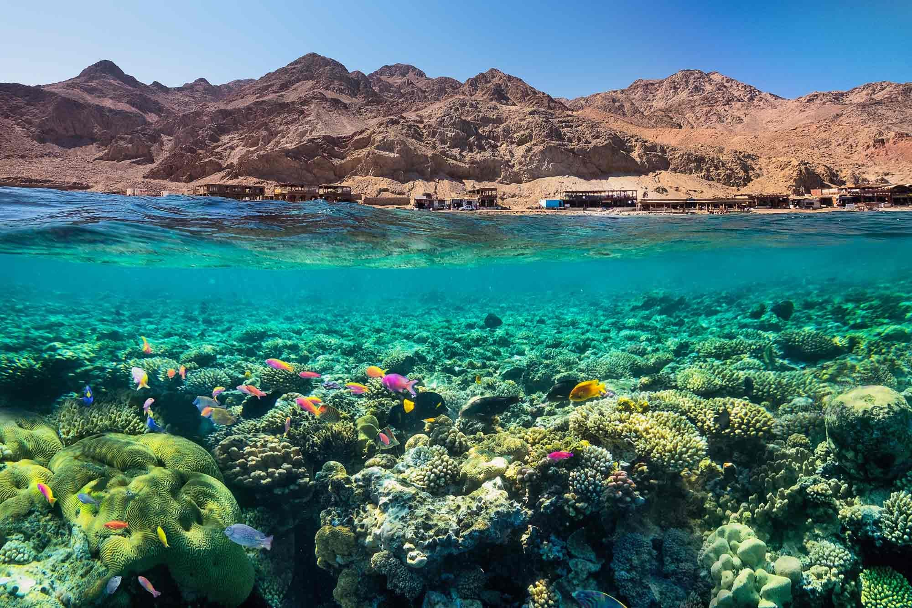

Dahab is a small town in southern Sinai, Egypt, on the shore of the Red Sea at the Gulf of Aqaba. It started as a quiet Bedouin fishing village and is now known for its relaxed atmosphere.
Many people call Dahab a paradise for divers because it has colorful coral reefs, clear water, and some of the best diving and snorkeling spots in the world.
Visit the beaches and dive sites early in the morning to avoid the heat
and the crowds.
Wear light clothes, a hat, and sunscreen, and bring water.
Agree on the price of taxis and diving trips before you start.
| Fact | Details |
|---|---|
| Best Season | March to May and September to November (warm sea, pleasant weather) |
| Currency | Egyptian Pound (EGP) |
| Language | Arabic (English is spoken in tourist areas) |
| Average Cost | Budget-friendly (check current prices before you go) |
Walk along the Asalah Promenade in the morning, then enjoy the Dahab Lagoon at sunset when the sky turns orange.
Explore the Blue Hole and the Canyon, and stop to see the colorful fish and coral reefs.
Take a snorkeling trip in the Red Sea, then walk through the local market to buy souvenirs.